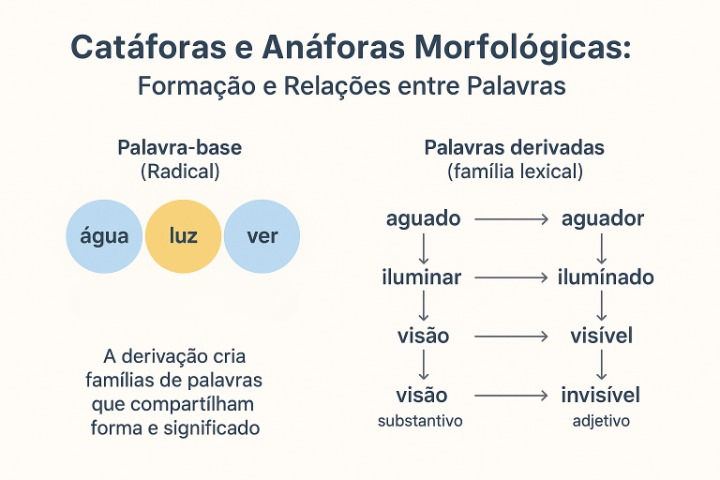

Catáforas e Anáforas Morfológicas: Relações de Formação e Sentido entre Palavras
As catáforas e anáforas morfológicas são formas de compreender como as palavras se relacionam por meio da derivação, formando famílias lexicais que compartilham um mesmo núcleo de sentido. Em vez de tratar as palavras como itens isolados, esse estudo evidencia como elas se conectam pela estrutura e pelo significado, permitindo ao leitor perceber os processos de formação que organizam o léxico da língua.
A proposta é mostrar, de maneira clara e didática, como palavras como “água” geram derivações como “aguado” e “aguador”, ou como “luz” se relaciona a “iluminar” e “iluminado”. Esse tipo de abordagem ajuda estudantes a ampliar o vocabulário e reconhecer padrões morfológicos relevantes para a leitura, a escrita e a interpretação de textos.
O que são catáforas e anáforas morfológicas
Embora os termos “anáfora” e “catáfora” sejam tradicionalmente usados na coesão textual, também podem ser aplicados à morfologia para descrever a relação entre palavras de uma mesma família. Na prática escolar, esse uso tem caráter didático: serve para mostrar que uma palavra pode retomar ou antecipar semanticamente outra dentro de uma série derivacional.
Assim, entendemos:
- Anáfora morfológica: quando uma palavra derivada retoma o núcleo de sentido da palavra-base. Ex.: luz → iluminado.
- Catáfora morfológica: quando uma forma derivada antecipa ou evidencia o radical que será explicado ou analisado depois. Ex.: iluminado → luz.
Esses dois movimentos permitem ao estudante enxergar a relação entre forma e significado, o que favorece a compreensão da estrutura lexical.
Derivação e formação de famílias de palavras
A derivação é o processo responsável por formar novas palavras a partir de um mesmo radical. Esse processo pode ocorrer por meio de prefixos, sufixos, mudança de classe gramatical ou até combinações simultâneas de afixos.
É esse mecanismo que cria as chamadas famílias lexicais: grupos de palavras que compartilham um mesmo elemento formador e possuem sentidos relacionados.
Observe alguns exemplos:
- água → aguado, aguador, aguaceiro
- luz → iluminar, iluminado, luminoso
- ver → visão, visível, invisível
- limpo → limpar, limpeza
Cada palavra derivada mantém uma relação semântica com sua base. Entender essa lógica ajuda o aluno a deduzir significados mesmo quando não conhece um termo específico.
Como a derivação modifica ou amplia o sentido
A partir de um mesmo radical, a língua pode gerar palavras com sentidos mais específicos, mais abstratos, de agente, de ação ou de características. Assim, a derivação não apenas modifica a forma, mas reorganiza a significação.
Veja alguns efeitos comuns:
- Criação de agentes: água → aguador.
- Criação de adjetivos: água → aguado.
- Formação de verbos: luz → iluminar.
- Formação de nomes abstratos: limpo → limpeza.
Com isso, o estudante compreende que pequenas modificações morfológicas podem gerar palavras novas com nuances próprias de sentido.
Exemplos explicados
A seguir, alguns exemplos detalhados que podem ser explorados em sala de aula:
- água → aguado: adjetivo que expressa excesso de água ou falta de concentração da substância.
- água → aguador: substantivo que designa o agente ligado ao transporte ou fornecimento de água.
- luz → iluminar: verbo que expressa o ato de “dar luz”, mostrando expansão semântica do radical.
- luz → iluminado: adjetivo que expressa o efeito da luz sobre um objeto ou ambiente.
Atividades para trabalhar catáforas e anáforas morfológicas
Para fins didáticos, a análise morfológica pode ser aplicada em atividades práticas que ajudam o estudante a visualizar como a derivação funciona em diferentes contextos.
- Mapa de família lexical: o aluno escreve uma palavra-base no centro e ramifica suas derivações.
- Transformação morfológica: converter substantivos em verbos, verbos em adjetivos etc.
- Identificação em textos: localizar palavras derivadas e identificar o radical comum.
- Criação de frases: produzir enunciados com três palavras da mesma família.
Importância para a leitura e interpretação
A compreensão das famílias lexicais melhora significativamente o desempenho em leitura. Ao reconhecer o radical e seus derivados, o leitor amplia sua capacidade de inferência e interpretação, entendendo nuances de sentido mesmo quando encontra palavras novas.
Além disso, a noção de catáfora e anáfora morfológicas ajuda a perceber como o vocabulário da língua é organizado e ampliado por meio de padrões estruturais.
Conclusão
O estudo das catáforas e anáforas morfológicas revela como a língua cria relações de forma e de sentido entre palavras que pertencem à mesma base. Esse conhecimento fortalece a leitura, a interpretação e a escrita, e constitui uma estratégia eficaz para ampliar o repertório linguístico dos estudantes.